Alpha · in testing Open source, for councils in England and Wales
One open system for council estates.
Terrier, leases, casework, compliance and valuations in one place, built around the property and the lease. No licence fee, ever.
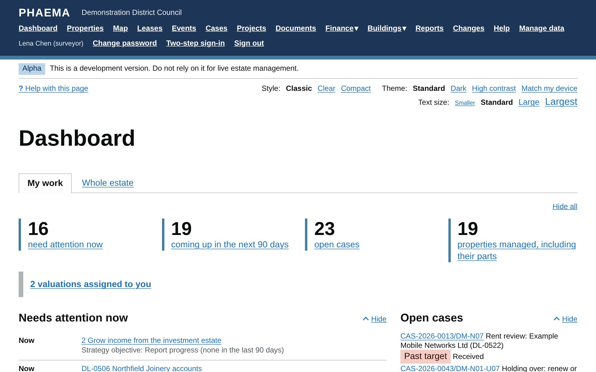
See it in action
Built for the way estates teams actually work.
Every property, on the map and on the record
Sites, blocks and units with Land Registry boundaries, UPRNs, photos, floor plans and the full history of what happened to each one.
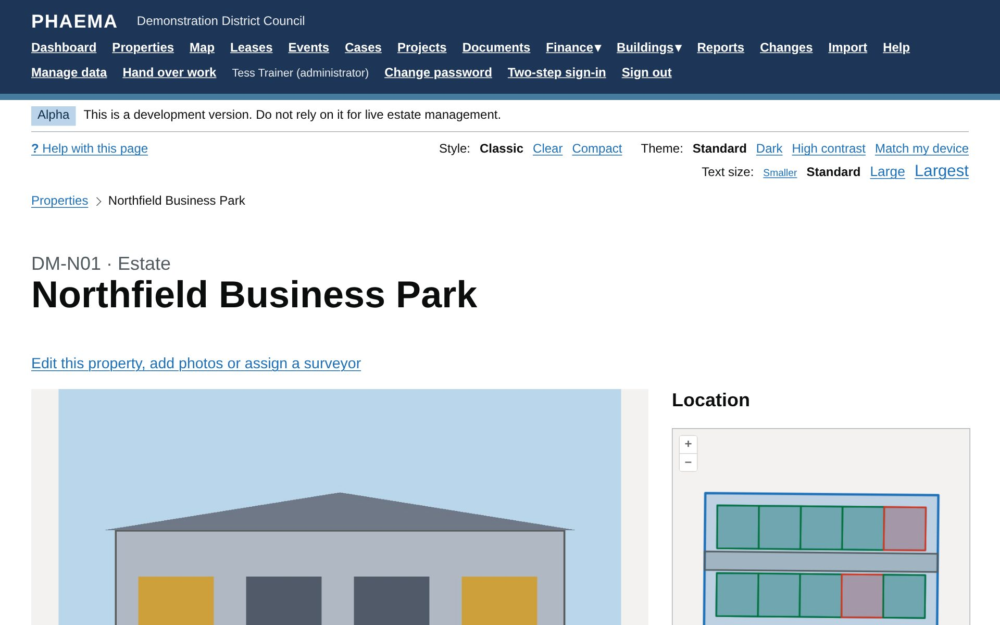
No missed break dates or rent reviews
Every lease carries its key dates, each assigned to a named surveyor, with reminders well before notice deadlines and a case opened when work starts.
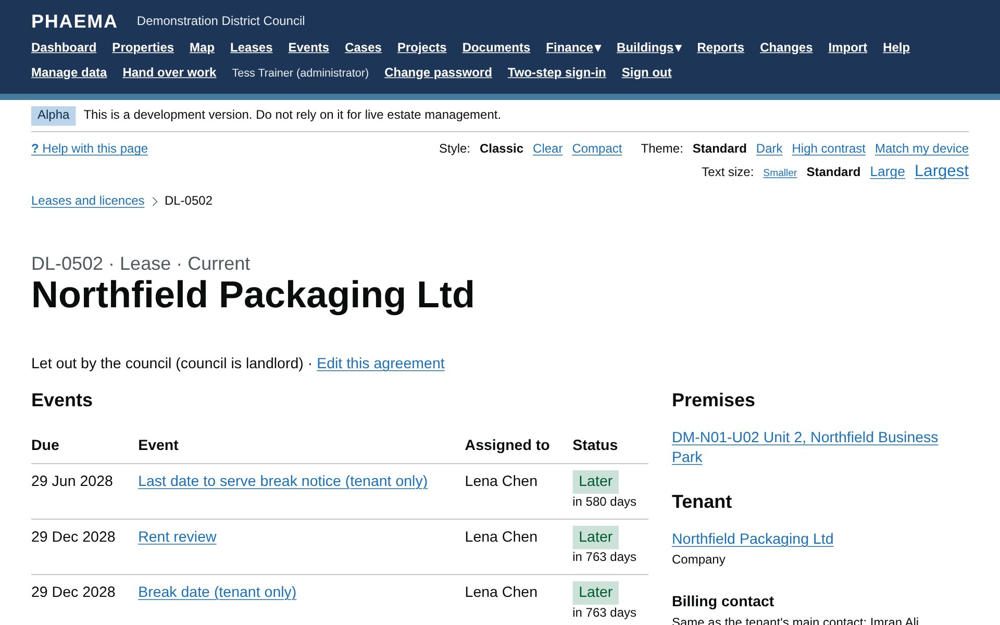
Tenants help themselves
An optional portal where tenants see what they owe, pay through the council's own payment page, download demands and report repairs, so fewer calls reach the estates team.
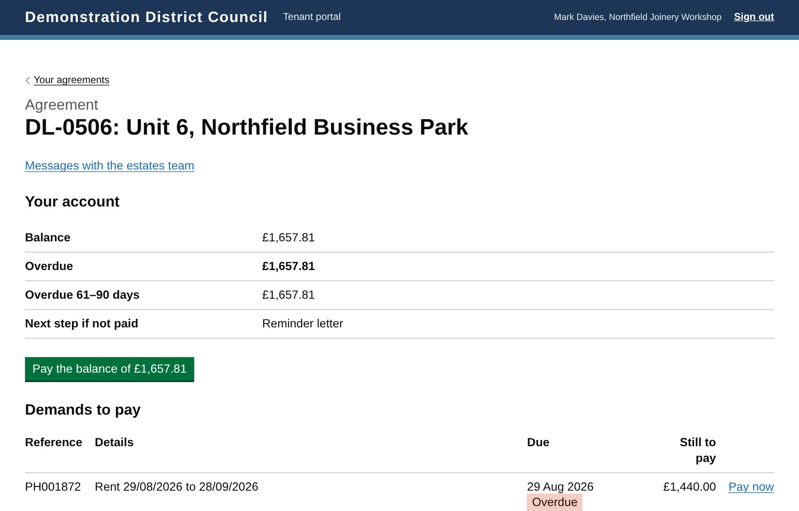
Fifteen modules, one record of the estate
Switch on what you need. Rents and service charges are optional; the council's finance system keeps the general ledger.
Property
Terrier and map · sites, blocks and floor plans · documents · space and occupation costs
Leases and income
Leases and key dates · rents and service charges · credit control · tenant portal
Buildings
Repairs and planned maintenance · condition surveys · contractor portal · compliance and Golden Thread
Strategy and value
Cases and projects · asset valuation · estate strategy and the Asset Challenge · reports
Designed by a chartered surveyor
“I wanted to develop a system surveyors actually wanted to use to help them day to day.”
Stuart Planner MRICS · Founder, PHAEMA
Safe to adopt
Free to use
No licence fee, ever. Councils pay only for hosting and any support they choose, and can run it themselves or have any supplier host it.
Your data, your servers
Hosted by the council or a UK or EU supplier. Open code, open standards and exports in open formats, so there is no lock-in.
Accessible by design
Built on the GOV.UK Design System and aiming for WCAG 2.2 AA, with dark, high-contrast and large-text settings, and a Welsh (Cymraeg) interface.
Secure by design
Two-step sign-in, optional single sign-on, access by role and area, and a log of every change. What is done, and what comes before live use.
Where the project is
- DoneBuilt
All fifteen modules, a contractor portal, condition surveys, GIS map layers, manuals, e-learning and a public test site.
- NowTesting
Pilot councils, a pilot of the tenant portal, an independent penetration test and accessibility audit.
- NextConnectors
Council mailboxes, Ordnance Survey, GOV.UK Notify texts and letters, Teams and SharePoint.
- LaterWider reach
Full Golden Thread information management, and finance, legal and CRM connectors.
For councils
PHAEMA for councils
Estates teams often work across several systems and a lot of spreadsheets, each bought, supported and kept up to date separately. PHAEMA puts the estate in one place, with no licence fee, so the money goes on hosting, support and improvements that every council shares.
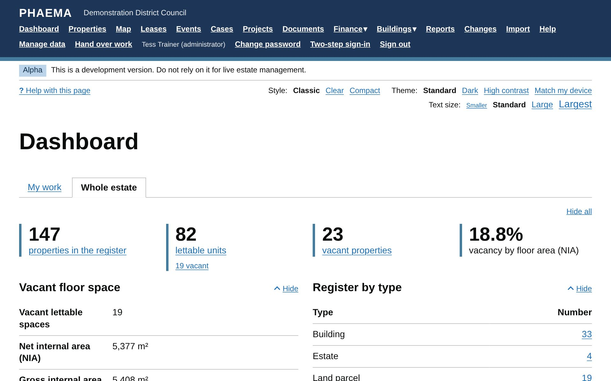
What it brings together
Property terrier
The register of land and buildings, mapped from Land Registry boundaries, with UPRNs, floor areas and titles.
Lease and key-date records
Leases, licences and wayleaves, with rent reviews, breaks, expiries and notice deadlines that remind the right people.
Buildings and compliance
Repairs and works orders, condition surveys and the backlog they find, certificates, remedial actions and Golden Thread information for every building.
Asset valuation
The rolling programme, Red Book records and the year-end schedule for finance.
Projects, acquisitions and disposals
Gateways, budgets, risks and the register changes completion needs.
Estate strategy
Each property's holding purpose, asset strategy and suitability, the Asset Challenge, the strategy's objectives and action plan, a five-year pipeline of property events and an annual health check, organised around the RICS guidance on public sector asset management.
Space and occupation costs
Who occupies each operational building, floor by floor, how well the space is used, and what occupation costs each department. Departments see their own buildings and keep their headcount up to date.
Rents and service charges, if wanted
Optional ledgers that feed the council's finance system, or leave this to the systems it already has.
A tenant portal, if wanted
Tenants see their account, demands and documents, report repairs, ask for consents and message the estates team, so fewer calls and emails.
Who it is for
District and borough councils
With a small estates team and an ageing terrier or spreadsheets.
Smaller unitary authorities
That want one system without enterprise licence costs.
Councils merging under local government reorganisation
Which must combine two or more estates systems. PHAEMA gives the new council one system it owns, with spreadsheet imports to bring each council's records across.
Combined authorities and development bodies
Running acquisitions, disposals and regeneration programmes.
Ways to use PHAEMA
Run it yourselves
The council's IT team installs PHAEMA with one command on its own servers or on UK or EU cloud hosting.
Have a supplier host it
Any IT supplier can host and support PHAEMA under the open licence, so the council can change supplier without changing system.
Become a pilot council
Pilot councils run the test programme with their own staff and their own data, and decide which connectors come first. The project helps with setting up, bringing data across and training.
What it costs
No licence fee, now or later. The costs are a modest server, the staff time to bring records across and train people, and any support the council chooses to buy.
What it does
What PHAEMA does
Fifteen modules around one record of the estate. The optional modules (rents, service charges, maintenance, compliance, valuation, and space and costing) can each be switched on when a council is ready, or left to the systems it already has.
New in November 2026
Buildings, contractors and moving in
Condition surveys and the backlog
Record what each building needs, with condition grades, priorities, years and costs. The work found builds a costed maintenance backlog by priority and element, and any item can become a job in one step.
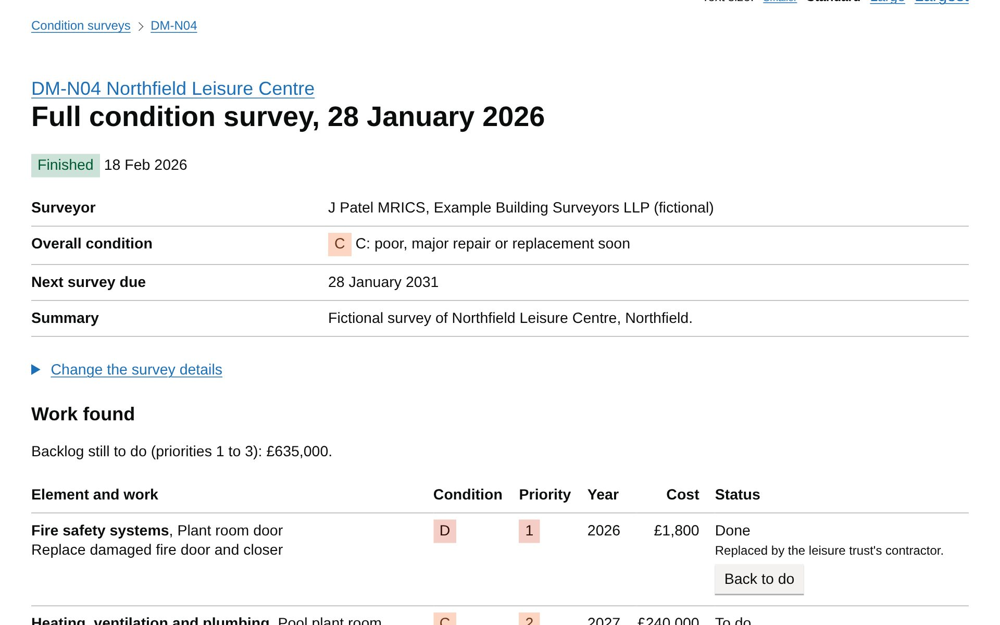
A portal for contractors
If the council wants it, contractors sign in with a code by email and see only their own works orders. They accept the job, give a date to attend, read the site hazards, add photos and certificates and report completion, and the council officer is told.
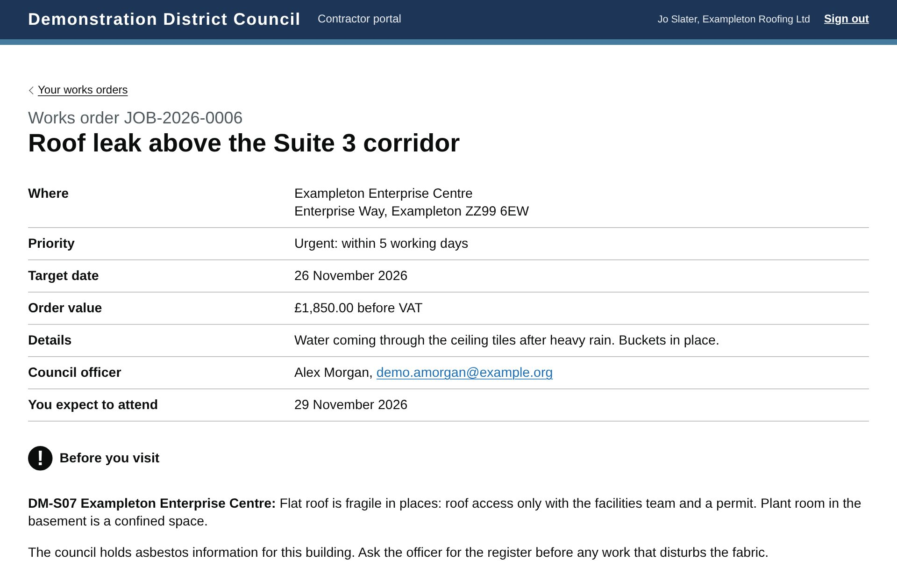
Bringing records across
Records from the old system go in through a trial run first. PHAEMA checks every row, compares control totals with the old system's figures, keeps a report of exceptions, and asks a second administrator to sign off the real import.
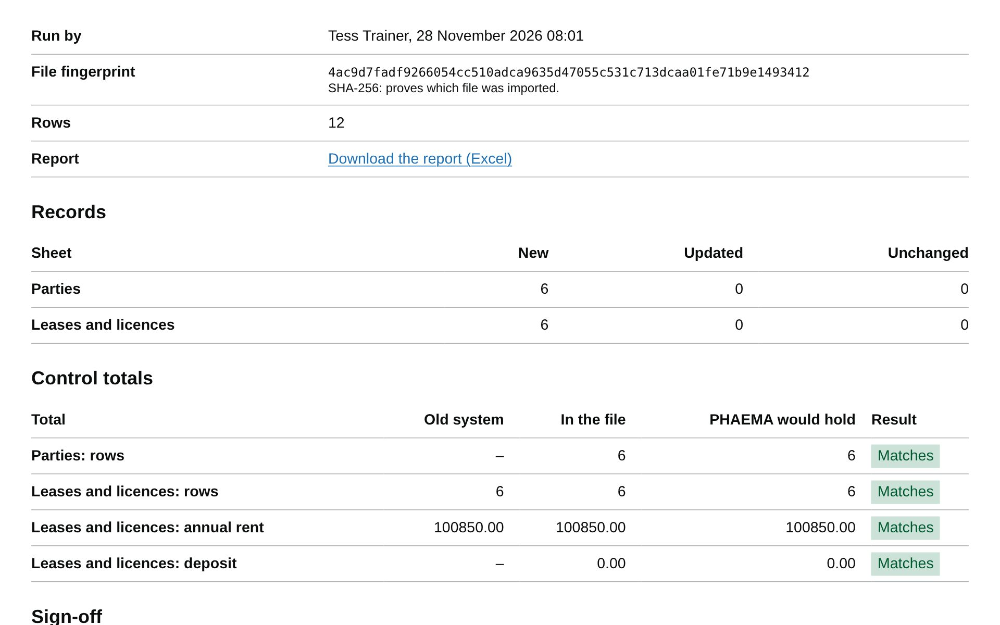
Map layers for your GIS
Properties and sites are published as map layers for QGIS, ArcGIS and other GIS, using the open OGC API - Features standard, in British National Grid or longitude and latitude. Each GIS connects with its own read-only API token.
https://your-phaema.example.gov.uk/api/ogc/Every module
Property
Property register
Estates, sites, buildings and units in a tree, with UPRN and USRN, floor areas (GIA, NIA and GEA to the RICS Code of Measuring Practice, and IPMS: All Buildings figures alongside, with the basis stated), titles, photos, disposals and a map drawn from Land Registry INSPIRE parcels. Each site and building records its construction, roof, windows, services and floor plans, gathered into a property report. Designations, overall condition, vacancy, planned disposals and yearly running costs are recorded too. Shops have an ITZA calculator, giving the rent per m² Zone A.
Document library
Thirty letter and notice templates, from consent letters to section 25 notice particulars, filled in from the case and downloaded to Word. Councils can adapt them and add their own.
Space and occupiers
Departments, teams and outside organisations such as the NHS in each building, floor and room, with a stacking plan, headcount and use of space, and each occupier's share of the building's costs, including a notional rent for freehold buildings. The property report sets it out for checking on site.
Leases and income
Leases and key dates
Leases, licences and wayleaves, let out or held. Rent reviews, breaks, expiries and notice deadlines become events with email reminders and a calendar feed. Leases, deeds and plans held as PDFs open in a built-in reader, with search across the wording; scanned documents are read on the council's own server so they can be searched too. Rents the council pays as a tenant are listed with every payment due over the next twelve months. Index-linked reviews are worked out from CPI, CPIH or RPI figures fetched from the ONS, with caps and collars. Assignments and underleases are tracked from consent to completion, keeping every former tenant, and rent deposits have their own account.
Rents and arrears
Demand runs, VAT, credit notes, receipts imported from finance, aged arrears and an export file for the finance system. Credit control takes each debt through reminder, final notice and an arrears case; payment plans pause the chasing while they are kept; interest on late rent is worked out to the lease. For the leases the council holds, finance gets an IFRS 16 data pack: every future payment, the lease term and the changes in the year, ready for the discount rate.
Service charges
Budgets, apportionment by floor area with caps, actual costs and year-end reconciliation on the RICS service charge timetable.
Tenant portal
An optional, separate area where tenants the estates team invites sign in with a code emailed each time. They see their own rent account, arrears, demands with Pay now links to the council's payment page, statement, key dates, shared documents, service charges, certificates they must provide, deposit and payment plan; they report repairs, ask for consents, send certificates and message the managing surveyor. Demands and reminders go by email through GOV.UK Notify.
Buildings
Maintenance
Repairs with target dates, who pays under the lease, works orders and their approval, recharges, planned maintenance and component lifecycles. Repairs reported by tenants and departments wait in a triage queue until estates decide what becomes a job. Condition surveys record what each building needs and when, building a costed backlog by priority and element, and an optional contractor portal lets contractors see their works orders, accept them, give a date to attend, add photos and certificates, and report completion.
Compliance
Fire, gas, electrical, water, asbestos, lift and EPC certificates with remedial actions, Golden Thread information and site hazards shown before every visit.
Strategy and value
Cases and approvals
Consents, renewals, dilapidations and enquiries with stages, tasks and statutory target dates. Supervisors approve decisions, with conflicts of interest declared first. Documents and saved emails are filed by dragging them onto the case. Each case has a site visit sheet for a phone or to print: safety information, the property details and a checklist the council sets for each type of case. Visits are recorded on the phone with photos, and differences from the property record are listed for the managing surveyor to apply. Vacant property is marketed through a marketing case, with agents' instructions, fees and asking terms, and particulars filled in from the record.
Projects
Developments, acquisitions, disposals and programmes taken through four gateways, with milestones, a budget by financial year, risks and a checklist of the register changes completion needs. The cases that make up a project, from acquisitions to lettings, are listed on it in order.
Asset valuation
The rolling valuation programme, internal or external valuers, Red Book records, impairment prompts, an initial valuation report drawn from the property record, and the year-end schedule for finance.
Estate strategy
Holding purposes with the council's own sub-categories; an asset strategy for each property (retain, invest, remodel or share, release, dispose) with who decided and the minute reference; the Asset Challenge run as a case; suitability grades; strategy reviews prompted on My work; an estate-wide overview; the adopted strategy with objectives, an action plan and a board report; a five-year property events pipeline; and an annual asset management health check compared with the year before.
Reports and open data
Ready-made and custom reports to Excel and CSV, the Transparency Code land and assets list, an open API and a change log of every edit. The whole estate can be exported in the layout of the Government Property Data Standard, with a table of how complete the records are. Properties and sites are published as map layers for QGIS, ArcGIS and other GIS (OGC API - Features). A migration toolkit brings records across from another system with trial runs, control totals, an exception report and sign-off.
People and access
Four roles, access areas that decide who sees each module, supervision chains, cover for absence, accounts for outside consultants that end on a set date, and a hand-over of a leaver's work in one step.
A closer look
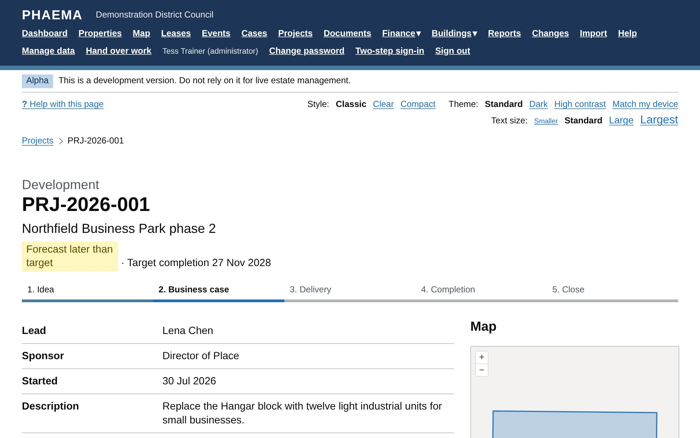
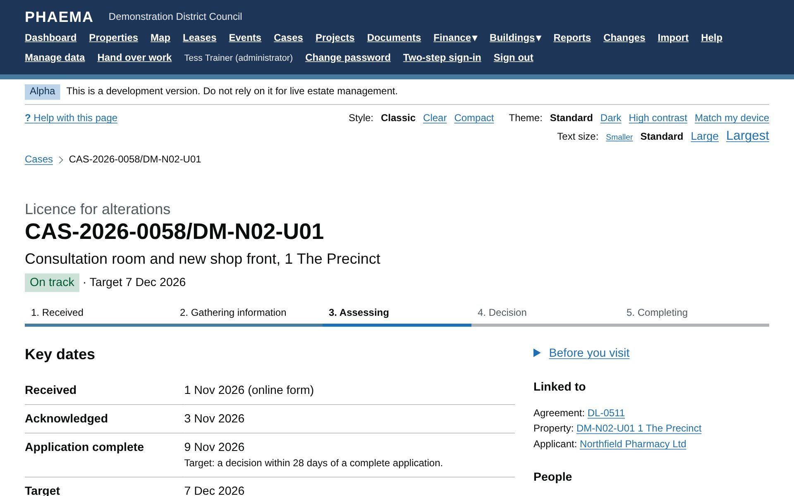
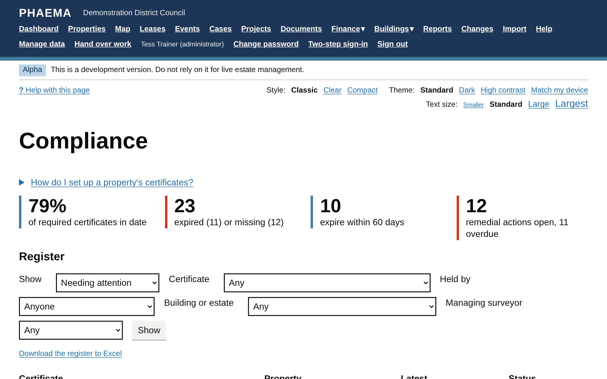
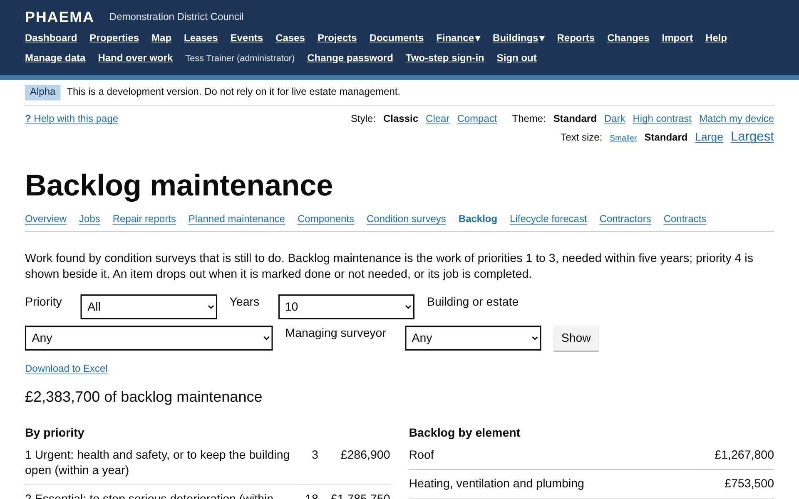
Screenshots show fictional demonstration data.
Security and assurance
Security and assurance
What protects PHAEMA today, what will be done before councils use it for live work, and how a council can check it for itself.
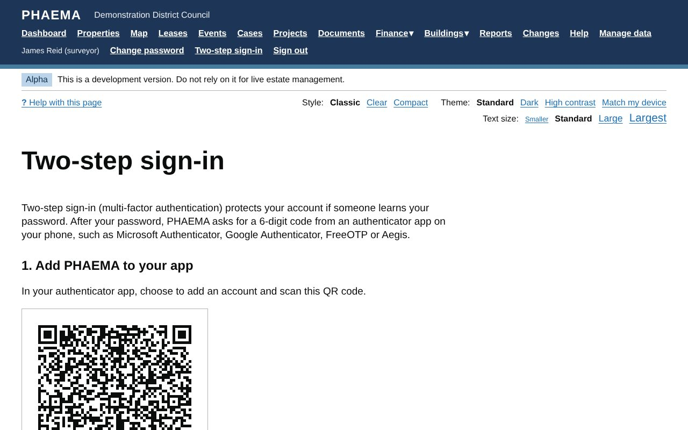
In place now
Two-step sign-in
A code from an authenticator app after the password, required for administrators by default and for everyone if the council chooses. Single-use recovery codes, and administrators can reset a lost phone.
Limits on password guessing
Sign-in pauses after repeated wrong passwords for one account or from one connection, on the sign-in page, the administration pages and the API alike. Sessions end after a working day, or two hours without use.
Single sign-on, if wanted
Staff can sign in with the council's own accounts through Microsoft 365 (Entra ID) or another OpenID Connect service, so the council's own sign-in rules apply. Outside consultants can keep a PHAEMA sign-in. Tested against a stand-in service; not yet proved on a council's live tenant.
Access by role and area
Roles decide what people can change and access areas decide what they can open, checked on the server for every page, download, report and API call.
A log of every change
Who changed what and when, across properties, leases, cases, finance, access and sign-in. The database refuses changes to the log made through the application.
API tokens for other systems
Each system gets its own key, limited to reading or changing, to the parts of the API it needs and to an end date, and cancelled on its own. No passwords in scripts.
Browser protections
A strict Content Security Policy, HSTS and other headers on every page limit what a malicious script or link could do.
Your data, your hosting
PHAEMA runs on the council's own servers or UK or EU hosting, and sends nothing to the project.
Secure servers by default
The installer sets up HTTPS, a firewall, automatic security updates and nightly backups.
Open to inspection
Every line of code, every automated test and the security policy are public.
Before live use
- An independent penetration test by a CREST or CHECK accredited tester, with a summary of the results published
- Single sign-on proved against a pilot council's live Microsoft 365 tenant and its conditional access rules
- An independent accessibility audit against WCAG 2.2 AA
- Numbered releases, with a security support period for each
Check it yourself
Councils and their suppliers are welcome to review the code or test their own installation. Please report security problems privately to stuart@phaema.co.uk.
Why open source
Pay once, together, and own the result
Councils already pay, separately, for estates systems that do much the same job. Open source lets them pay once, together, and own the result.
No licence fees
Any council can download and run PHAEMA. Money goes on hosting, support and improvements that every council then shares.
No lock-in
Data sits in an open PostgreSQL database with exports to CSV, Excel and GeoJSON. Any supplier, or the council's own IT team, can host and support it, so changing supplier does not mean changing system.
Open to inspection
Every line of code can be read, tested and security-reviewed by the council or anyone it trusts. Nothing is hidden behind a vendor's contract.
Build once, share everywhere
When one council pays for a feature, every council gets it. Improvements come back to the shared code under the AGPL licence, so nobody can take it private.
Follows government guidance
The Technology Code of Practice asks the public sector to be open, use open standards and make code reusable. PHAEMA is built on the GOV.UK Design System and aims for WCAG 2.2 AA.
Your data, your hosting
Councils choose where PHAEMA runs: their own servers or UK or EU hosting. Planned connectors use open standards, so they work with Microsoft 365 or with open-source alternatives.
Roadmap
Roadmap
What is built, what is being tested now, and what comes next. Councils taking part help decide the order.
Built
- Property register, map and Land Registry boundaries
- Leases, key dates, reminders and calendar feed
- Cases, approvals and the document library
- Rent ledger and service charges
- Maintenance, compliance and the Golden Thread
- Asset valuation
- Space, occupation and costs by occupier
- Estate strategy: asset strategies, the Asset Challenge and suitability
- Strategy objectives, action plan and board report; property events pipeline; annual health check
- Projects with gateways, budgets, risks and completion
- Access areas, cover and hand-over of work
- Reports, imports, open data and API
- Help, user and technical manuals, and e-learning for five roles
- One-step server installation with HTTPS and nightly backups
- A public test site, reset every 48 hours
- Two-step sign-in (multi-factor authentication) and a published security policy
- Single sign-on with the council's own accounts (Microsoft 365 and others), as an option
- Site and building details, floor plans, property and valuation reports, and site visit sheets
- Site visits recorded on the phone, with photos and differences from the record to apply
- Index-linked rent reviews from ONS figures; dealings register; rent deposit accounts
- Credit control, payment plans and interest on late rent
- Void marketing with agent instructions; ITZA and rent per m² Zone A for shops
- Limits on password guessing, shorter sessions, and code and dependency scanning on every change
- IFRS 16 data pack for finance on the leases the council holds
- Welsh (Cymraeg) interface, chosen by each person, as a draft for review
- Content Security Policy and a change log protected by the database
- A procurement and information governance pack for councils' assessments
- Scoped API tokens for other systems, with password sign-in to the API off
- Letter templates in a limited language that cannot print other data or read files
- Tenant portal: rent account, demands with Pay now, documents, repairs, requests, service charges, certificates and messages
- Demands and tenant emails through GOV.UK Notify
- Repair reports and requests from tenants and departments, triaged by estates
- Condition surveys, a costed maintenance backlog and lifecycle forecast
- A contractor portal for works orders: accept, attend, photos, certificates and completion
- Map layers for QGIS, ArcGIS and other GIS (OGC API - Features), by API token
- A migration toolkit: trial runs, column mapping, control totals, documents and sign-off
Now: testing
- A major test programme run by council staff
- Feedback from testers on the public test site
- Fixing what testing finds, and preparing for an independent penetration test and accessibility audit
- A pilot of the tenant portal with a few tenants
Next: connectors
- Email sent through the council's own mailbox
- Ordnance Survey address, UPRN and EPC lookups
- Texts and letters to tenants through GOV.UK Notify (email is built)
- Notifications in Teams, Matrix or Nextcloud Talk
- Documents kept in SharePoint or Nextcloud
Later
- Full Golden Thread information management
- Live finance, legal and CRM connectors
- Welsh translation reviewed by a qualified translator
Connectors will be one optional module, off by default and built on open standards, so the same connector works with Microsoft 365 or with open-source alternatives such as Nextcloud, Matrix and Keycloak.
Resources
Resources
Everything you need to try PHAEMA, learn it, test it or run it.
Security policy
What protects PHAEMA today, the known gaps, and how to report a security problem.
Procurement pack
A service definition, answers to common security questions, and templates for the accessibility statement, DPIA, record of processing and retention schedule.
Tour
A self-running, clickable tour of every part of PHAEMA, for a first look or a screen at an event.
Test site
Try PHAEMA with fictional data: a council estate, leases, cases and projects to explore. Request a sign-in on the site; the data is reset every 48 hours.
Training
Interactive courses for surveyors, finance, maintenance, administrators and viewers, using the real screens.
User manual
How to do each task in PHAEMA, with worked examples from the demonstration data.
Help pages
The same help that appears inside PHAEMA, readable on GitHub.
Technical manual
Architecture, frameworks, data model, security, hosting and how to extend PHAEMA.
Test programme
The tests council staff run before go-live, with expected results to record.
Source code
The full application under the AGPL, with its automated tests and installation scripts.
Roadmap
What is built, what is being tested and what comes next.
Integrations review
The market review behind the connectors plan, including open-source GIS and Microsoft 365 alternatives.
Run it on your own computer
You need Docker (or Colima on a Mac) and Git. Mac users can follow the Mac setup guide.
git clone https://github.com/phaema/phaema-app.git
cd phaema-app
./phaema.sh start
./phaema.sh admin # create your sign-inTake part
Take part
PHAEMA is built by a chartered surveyor with a very small team. Every tester, reviewer and contributor makes it better for every council.
Councils
Try the test site, run parts of the test programme with your own staff, and tell us what your estates team needs. Pilot councils run PHAEMA with their own data, get help setting it up, and shape what is built next.
Surveyors and estates staff
Check that the processes match how you work: rent reviews, the 1954 Act, service charges, valuations and casework. Practical corrections from practitioners are the most valuable contribution of all.
Developers
Pick up an issue, fix a bug or build a connector. PHAEMA is Django and PostGIS with an automated test suite; contributions are signed off under the Developer Certificate of Origin.
GIS and data teams
Help shape the map layers, OS and EPC lookups and open data output so PHAEMA fits the systems you already run.
Suppliers
Host and support PHAEMA for councils. The code is free for you to use; the AGPL asks only that your improvements are shared.